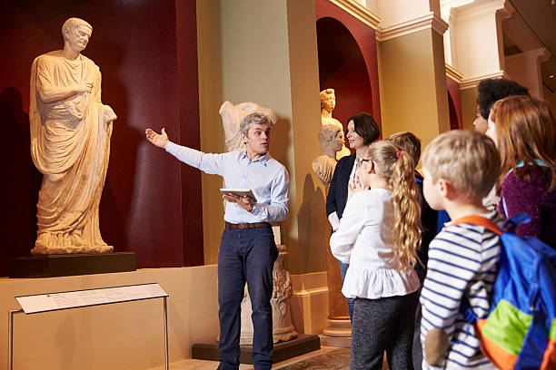
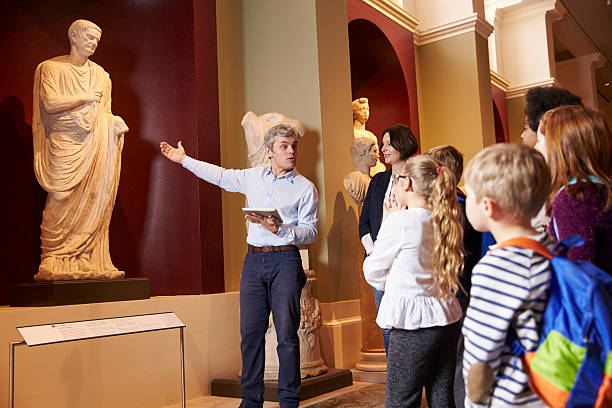

Información del Museo
El Museo Metropolitano de Cultura Moderna es un espacio dedicado a la difusión del arte, la historia y la tecnología. Abierto al público desde 1982, ofrece experiencias educativas e interactivas para todas las edades.
Nuestra Historia
Fundado en los años 80 como una iniciativa para revitalizar el casco histórico de la ciudad, el museo comenzó con una colección de piezas arqueológicas y se expandió hacia exposiciones de arte moderno, ciencia y cultura digital. En las últimas décadas ha incorporado tecnología para crear experiencias inmersivas e inclusivas para todo tipo de público.
Ubicación
Dirección: Av. Cultura 1234, Ciudad Central, País.
Galería del Museo


 
